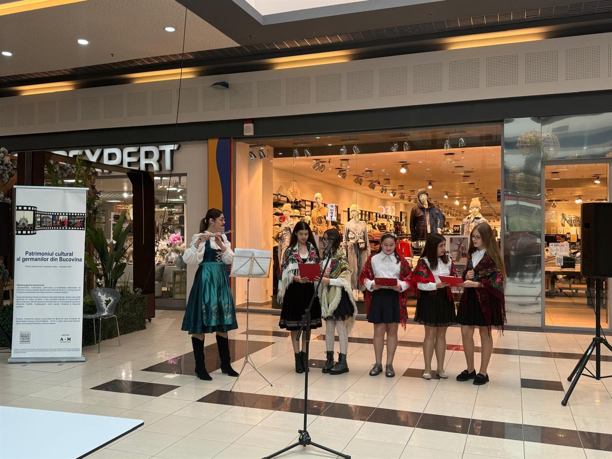
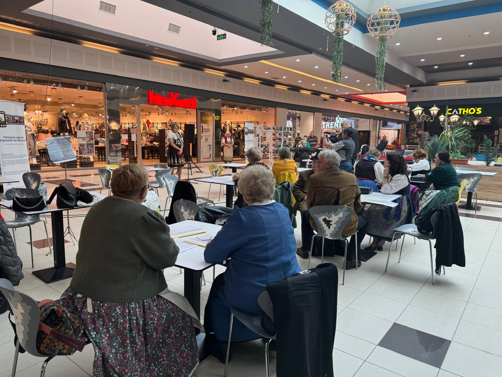
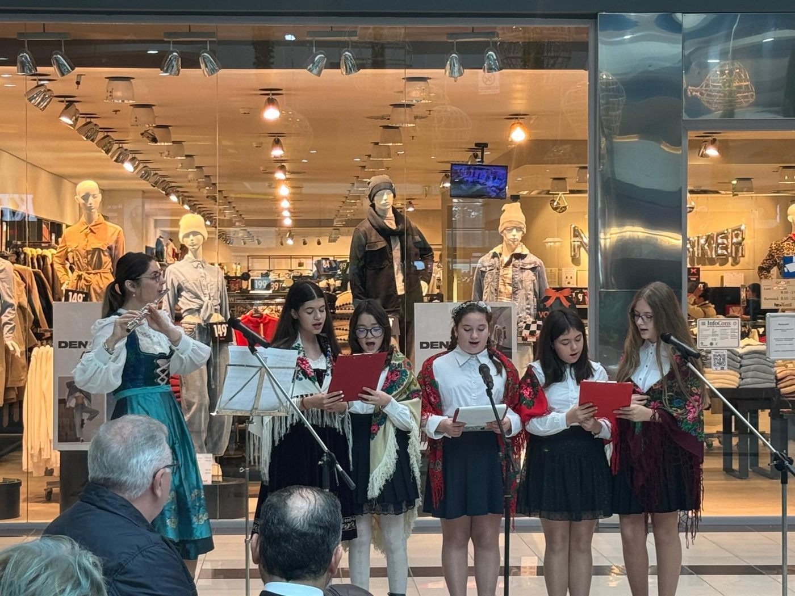
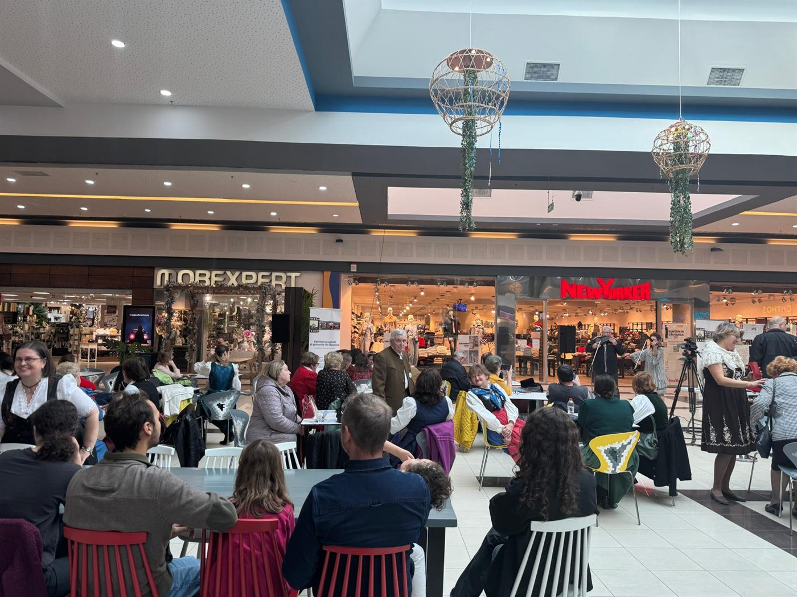
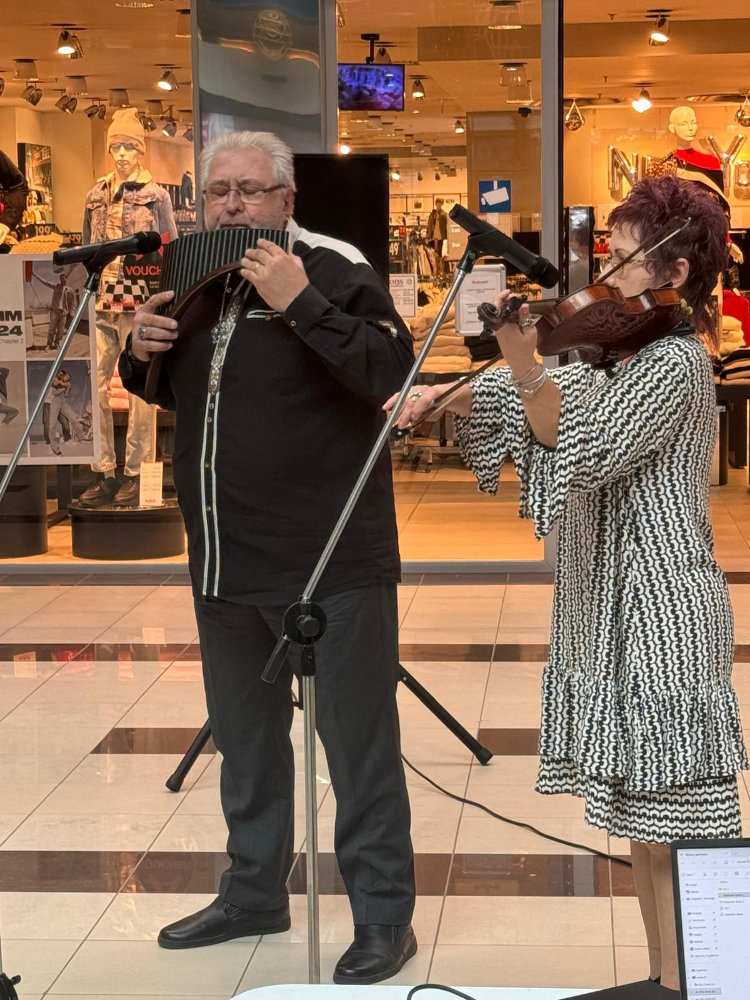
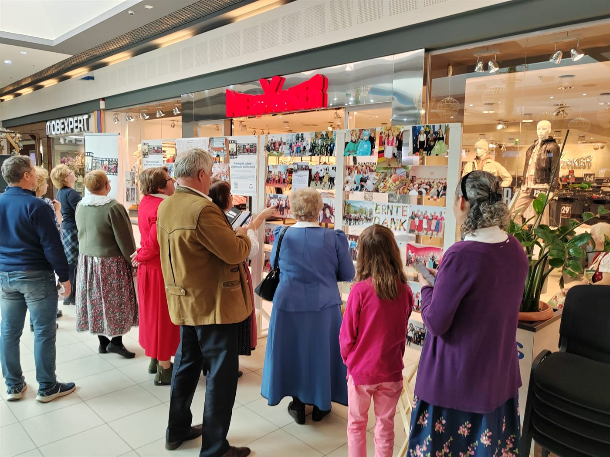
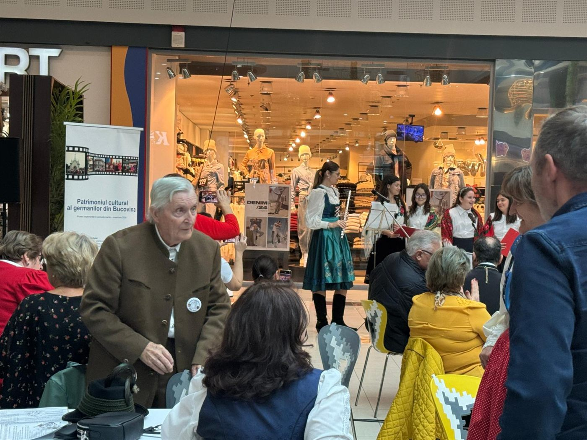
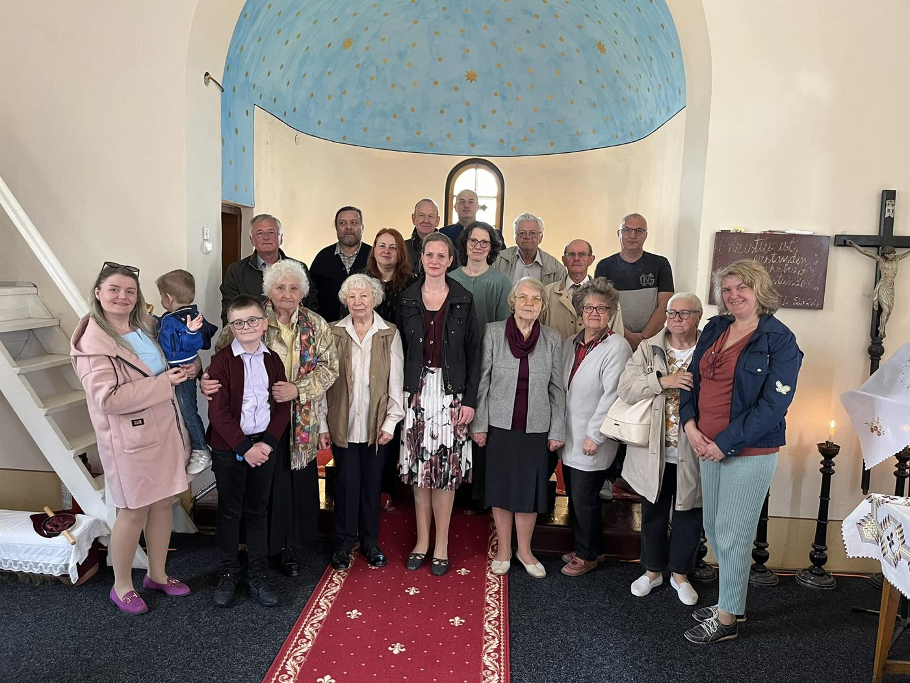
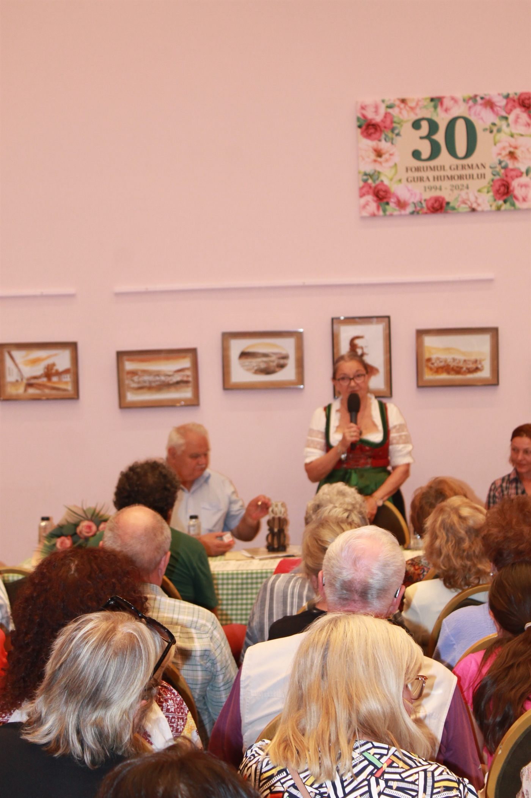
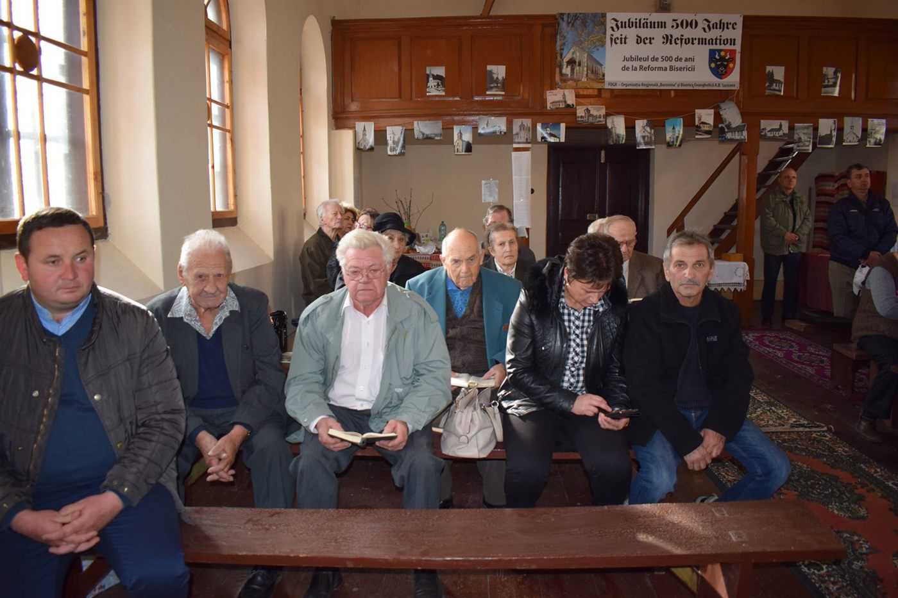

Patrimoniul cultural al germanilor din Bucovina
Nouă luni de documentare, filmări și evenimente în comunitățile germane ale Bucovinei, o platformă online, 10 documentare, pliante tematice, DVD-uri și un festival la Suceava, pentru a păstra și a face cunoscut patrimoniul unei comunități care a modelat regiunea vreme de două secole.
Obiectivul general
Documentarea, evidențierea, promovarea și revitalizarea elementelor de patrimoniu cultural imaterial specifice germanilor din Bucovina, în scopul punerii în valoare și consolidării diversității culturale, în context european.
Obiective specifice
- Creșterea gradului de implicare a 300 de membri aparținând comunității germanilor din județul Suceava în activități de documentare și promovare a patrimoniului cultural imaterial, prin participarea la activități de cercetare-documentare, la realizarea de materiale de promovare, la o expoziție foto, la workshop-uri ale meșteșugurilor tradiționale, la spectacole culturale și crearea unei baze de date cuprinzând aspecte specifice ale culturii, tradițiilor și meșteșugurilor germanilor, prin intermediul unei platforme online;
- Facilitarea accesului unui număr de minimum 5.000 de persoane aparținând publicului larg la cultura, tradițiile și meșteșugurile specifice ale germanilor din județul Suceava, prin diseminarea de materiale de promovare (10 documentare TV, o emisiune TV, o emisiune radio și un spot radio difuzate online și la nivel regional, 310 DVD-uri, 25 de afișe și 1.520 de pliante), prin participarea la un festival al tradițiilor germanilor din Bucovina (expoziție foto, expoziție culinară cu mâncăruri tradiționale germane și un spectacol cultural), precum și prin accesarea unei platforme online de promovare a patrimoniului cultural imaterial al germanilor din Bucovina.
Despre comunitate
Primii coloniști vorbitori de limbă germană s-au așezat în Bucovina după 1775, veniți din Renania, Baden, Hessa, Boemia și Moravia, și au fost numiți „purtători de cultură”. Șvabii, agricultori, s-au stabilit la Ilișești, Ițcani, Milișăuți, Bădeuți sau Arbore; țipțerii, mineri, forestieri și plutași veniți din Zips, la Iacobeni, Pojorâta, Cârlibaba, Ciocănești și Fundu Moldovei; germanii boemi, sticlari și meșteșugari, la Gura Humorului, Gura Putnei, Voievodeasa, Crasna și Poiana Micului. Rădăuți era socotit „cel mai german oraș al Bucovinei”, iar comunități numeroase existau la Suceava, Câmpulung Moldovenesc, Vatra Dornei și Gura Humorului. Repatrierea din 1940 și deportările din perioada comunistă au redus drastic comunitatea, aflată astăzi în pericol de a-și pierde identitatea, tradițiile și meșteșugurile. Proiectul a lucrat cu Uniunea Germanilor Bucovineni din Rădăuți și Casa Germană din Rădăuți, cu Forumul German din Câmpulung Moldovenesc și corul „Edelweiss”, cu organizația germanilor din Suceava și cu comunitatea din Vatra Dornei.
Activitățile proiectului
Cercetare și documentare pe teren
Din martie până în octombrie 2024, echipa proiectului, împreună cu un expert etnograf, a făcut 18 deplasări de documentare la Suceava, Rădăuți, Gura Humorului, Vatra Dornei, Câmpulung Moldovenesc, Vatra Moldoviței, Moldovița, Fundu Moldovei, Ciocănești, Breaza și în alte localități, a discutat cu organizațiile germanilor din județ, a cules mărturii, fotografii de arhivă, cântece, rețete și obiceiuri, a pregătit interviurile filmate și a verificat acuratețea textelor pentru pliante, documentare și emisiuni. Zece teme au fost documentate: tradițiile religioase, Crăciunul, Paștele, Ziua Recoltei (Erntedankfest), Ziua Reformei (Reformationstag), mâncărurile tradiționale, meșteșugurile și tradițiile culturale ale comunităților din Suceava, Rădăuți și Câmpulung Moldovenesc.
Platforma online germani.ro
Un site dedicat, optimizat pentru telefon, cu articole documentate pentru fiecare dintre cele zece teme, câte un pliant tematic descărcabil, aproximativ 80 de fotografii de arhivă și de la evenimente (Erntedankfest Suceava 2024, Rusaliile, Reformationsfest, Fasching la Rădăuți, Zipserfest 1936, morile și sticlăriile de altădată) și o secțiune video cu cele zece documentare. Conținutul platformei este prezentat și pe acest site, în secțiunea Activități.
10 documentare și emisiuni
Zece documentare de câte 7 minute, realizate cu interviuri filmate în comunități, publicate pe YouTube și pe platforma unui post de radio regional, plus o emisiune de televiziune de 30 de minute (Intermedia TV, 18 octombrie 2024), o emisiune radio de 45 de minute (Activ FM, 18 septembrie 2024) și un spot radio difuzat de 20 de ori în județele Suceava, Iași și Neamț. Documentarele pot fi vizionate mai jos.
Materiale tipărite și DVD
1.000 de pliante tematice (10 modele), 520 de pliante de prezentare a proiectului, 25 de afișe, roll-up-uri, 250 de fotografii ilustrative realizate de un fotograf profesionist și 310 DVD-uri cu cele zece documentare, distribuite la festival și la conferința finală.
Festivalul tradițiilor germanilor din Bucovina
Sâmbătă, 2 noiembrie 2024, între orele 10 și 18, la Shopping City Suceava, festivalul a adus în fața publicului o expoziție de fotografie despre viața comunității germane, o expoziție gastronomică cu dulciuri tradiționale germane oferite vizitatorilor și un spectacol de două ore susținut de corul „Deutsche Liedertafel” al Uniunii Germanilor Bucovineni din Rădăuți, ansamblul vocal-instrumental de copii al organizației germanilor din Suceava, ansamblul vocal al Liceului Teoretic „Ion Luca” din Vatra Dornei și formația Ovidiu Șvartz Band. Au fost distribuite 1.400 de pliante și 300 de DVD-uri, iar publicul festivalului a fost estimat la peste 600 de persoane.
Promovare
Conferință de presă de lansare la 27 aprilie 2024 (Voroneț) și conferință finală la 2 noiembrie 2024 (Suceava), două comunicate de presă în cotidianul regional, afișul și spotul radio al proiectului.
Rezultate în cifre
| Rezultat | Realizat |
|---|---|
| Deplasări de documentare în comunități | 18, martie – octombrie 2024 |
| Documentare video | 10, câte 7 minute, publicate online |
| Emisiuni | 1 emisiune TV de 30 min, 1 emisiune radio de 45 min, 1 spot radio cu 20 de difuzări |
| Platformă online | germani.ro, 10 articole tematice, 10 pliante PDF, cca 80 de fotografii |
| Tipărituri | 1.000 de pliante tematice, 520 de pliante de proiect, 25 de afișe |
| Fotografii / DVD-uri | 250 / 310 |
| Festival | 1 zi, expoziție foto, expoziție gastronomică, spectacol cu 4 formații și cca 28 de artiști, peste 600 de spectatori |
| Conferințe / comunicate de presă | 2 / 2 |
Fotografii
















